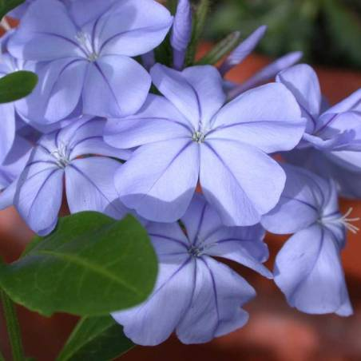
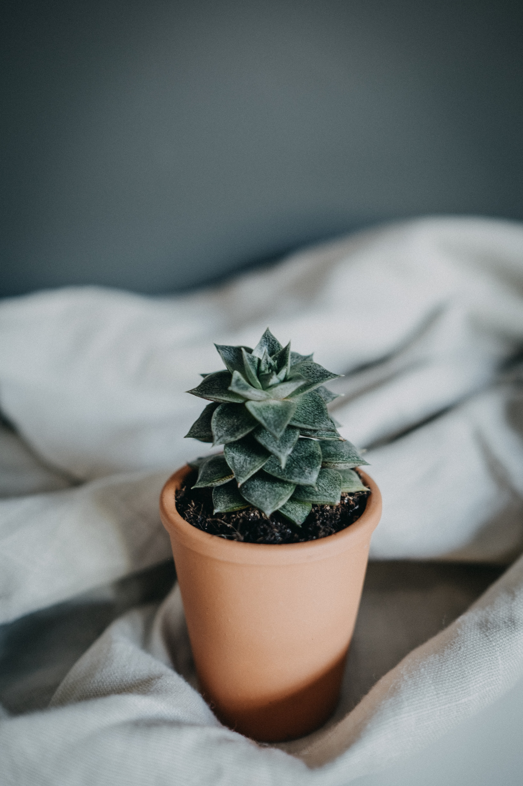
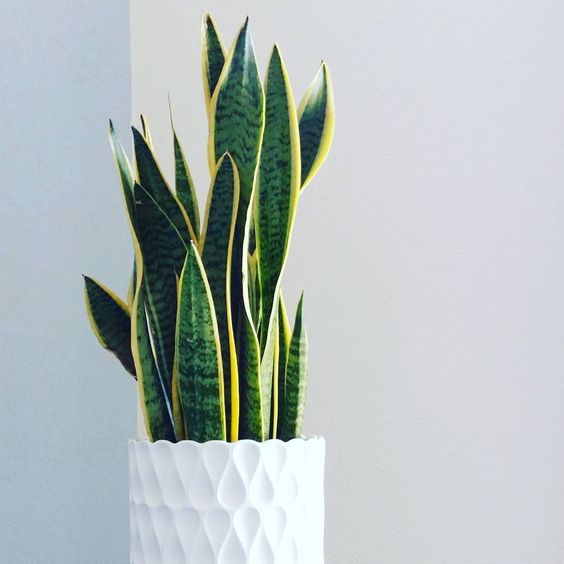
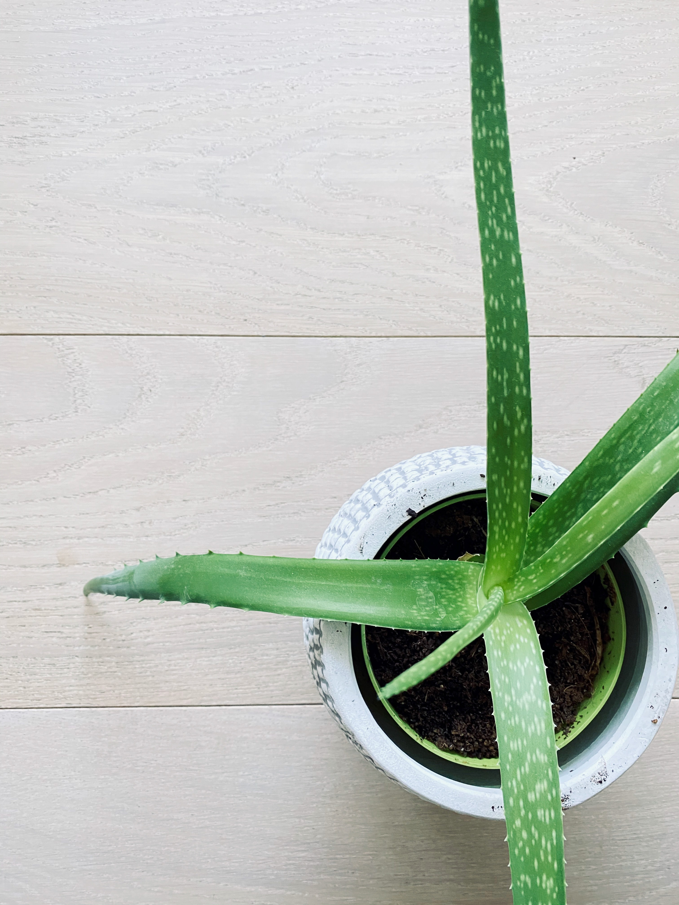
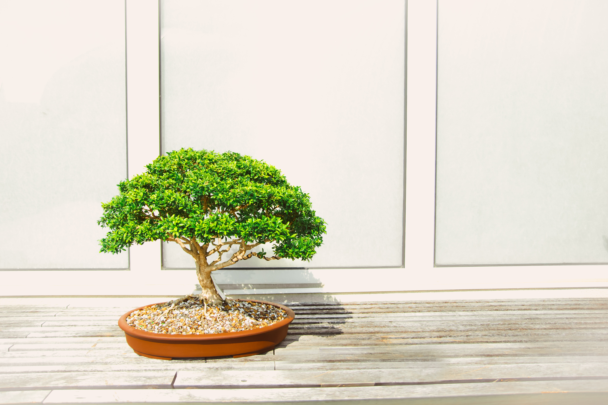
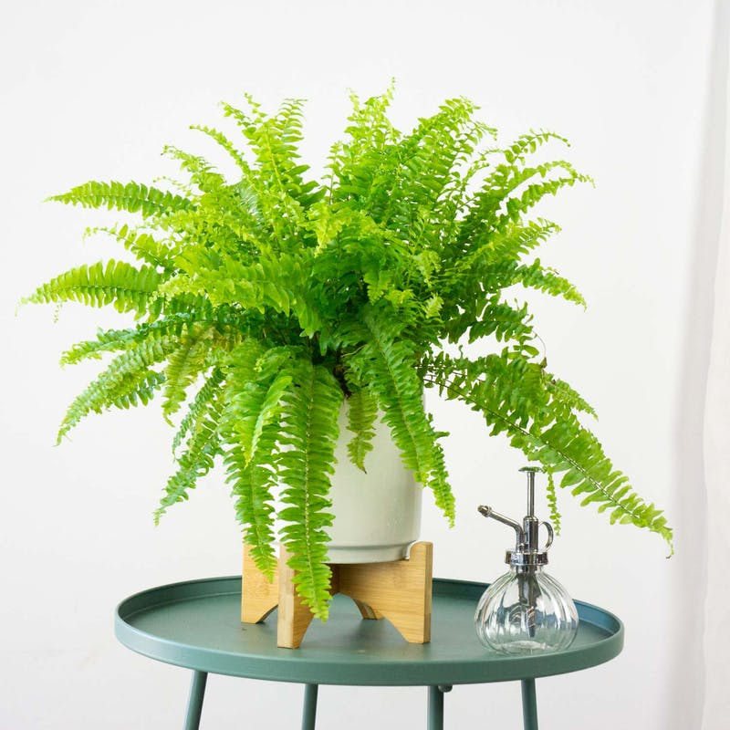

Jazmín azul
Características
- Clima de origen: Templado y tropical
- Riego: De manera abundante en verano y más ligeramente en invierno.
Al requerir un entorno húmedo, es conveniente rociarla regularmente hasta que aparezcan sus flores. - : Mucha agua siempre que la tierra esté seca
- : Mucho sol
- : De exterior

Suculenta
Características
- Clima de origen: Cálido y árido
- Riego: Cada 15 días en invierno / Una vez por semana en verano
- : Poca agua
- : Mucha luz
- : De interior y exterior

Sansevieria
Características
- Clima de origen: Cálido y de baja humedad
- Riego: Una vez por mes en invierno / Cada 15 días en verano
- : Poca agua
- : Puede sobrevivir con poca luz evitando rayos directos del sol
- : De interior

Aloe Vera
Características
- Clima de origen: Desértico
- Riego: Una vez al mes en invierno / Una vez a la semana en verano
- : Poca agua
- : Mucho sol
- : De interior y Exterior

Bonsai
Característica
- Clima de origen: Tropical
- Riego: Nunca de forma rutinaria, sólo cuando la tierra se encuentre ligeramente seca
- : Mucha agua sólo cuando veamos que la planta lo necesite
- : Mucho sol
- : De exterior

Cactus
Características
- Clima de origen: Seco y caluroso
- Riego: Cada 15 días en invierno/ Una vez por semana en verano
- : Mucha agua
- : Mucho sol las especias con pelo y espinas fuertes / Poco sol las especies con pocas espinas
- : De interior y exterior

Helecho
Características:
- Clima de origen: Tropical
- Riego: Un par de veces por día
- : Mucha agua
- : Mucha luz evitando rayos directos del sol
- : De interior
Lavanda
Características
- Clima de origen: Mediterráneo
- Riego: Cada 15 días en invierno / Una vez a la semana en verano
- : Poca agua sólo cuando la tierra esté seca
- : Mucho sol directo
- De exterior